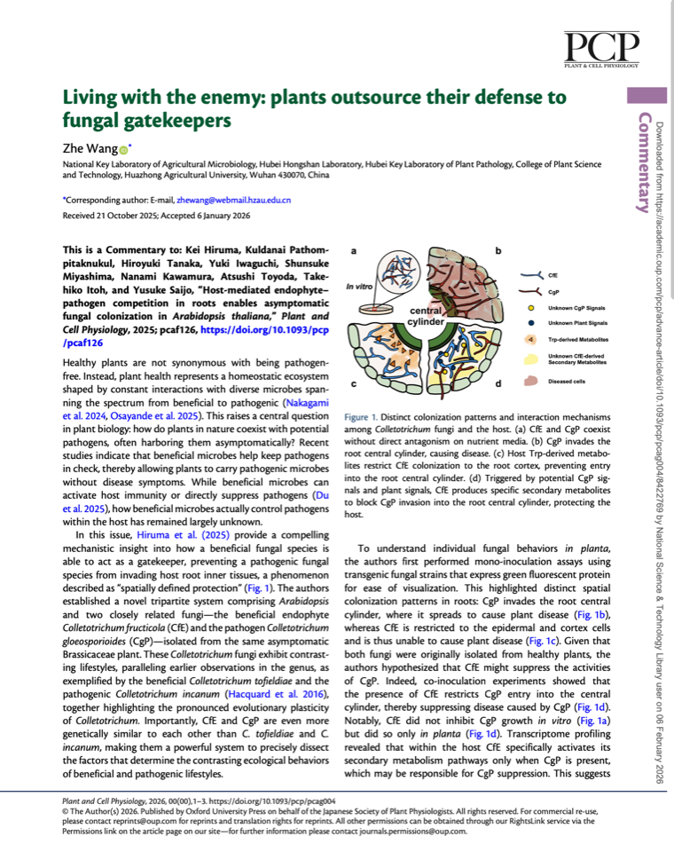
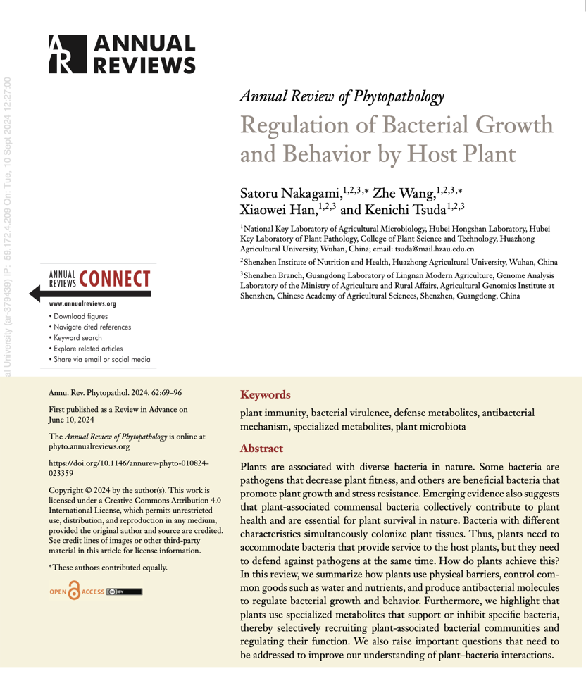

Core questions核心问题
- Phyllosphere microbiome assembly and function叶际微生物组的组装与功能
- Microbiome-mediated disease suppression微生物组介导的病害抑制
- Host control of microbial community dynamics宿主对微生物群落动态的调控
I am a Ph.D. student in the Kenichi Tsuda lab at Huazhong Agricultural University. I combine multi-omics, microbial ecology, and mechanistic experiments to understand how microbial communities influence plant health and disease outcomes. 我是华中农业大学津田贤一实验室的博士研究生。我结合多组学、微生物生态学与机制实验，研究微生物群落如何影响植物健康与病害结局。
My work asks how plants recruit, shape, or depend on microbial communities when pathogens enter the system—and how those relationships alter disease outcomes.我的研究关注：当病原进入系统后，植物如何招募、塑造或依赖微生物群落，以及这些关系如何改变病害结局。
I am particularly interested in how microbial members in the phyllosphere influence host health, pathogen behavior, and microbiome-mediated disease outcomes.我尤其关注叶际微生物成员如何影响宿主健康、病原行为，以及由微生物组介导的病害结果。
Methodologically, I connect data-rich approaches with mechanistic questions. That means combining multi-omics and microbial ecology with carefully designed experiments rather than treating any single technique as sufficient on its own.在方法上，我把数据密集型手段与机制问题连接起来，将多组学和微生物生态学与精心设计的实验结合，而不把任何单一技术视为全部答案。
A focused selection of recent work, including my original reflection on the path behind each publication. The complete record is available on the Scientific CV page.以下为近期代表性成果，并保留我对每篇文章发表过程的原始感悟；完整发表记录见学术简历页面。

Wang Z*. Plant and Cell Physiology, pcag004.
Host-mediated endophyte–pathogen competition and asymptomatic fungal colonization.聚焦宿主介导的内生真菌–病原竞争与无症状真菌定殖。
This article comments on Kei Hiruma, Kuldanai Pathompitaknukul, Hiroyuki Tanaka, Yuki Iwaguchi, Shunsuke Miyashima, Nanami Kawamura, Atsushi Toyoda, Takehiko Itoh, and Yusuke Saijo, “Host-mediated endophyte-pathogen competition in roots enables asymptomatic fungal colonization in Arabidopsis thaliana,” Plant and Cell Physiology, 2025, pcaf126.这篇文章是对 Kei Hiruma、Kuldanai Pathompitaknukul、Hiroyuki Tanaka、Yuki Iwaguchi、Shunsuke Miyashima、Nanami Kawamura、Atsushi Toyoda、Takehiko Itoh 和 Yusuke Saijo 论文的 Commentary，主题是根部内生真菌与病原在宿主介导下的竞争如何帮助 Arabidopsis thaliana 实现无症状真菌定殖。
The manuscript went through repeated revisions and a winding path before publication. With Ken's support, it was eventually published under my sole authorship, which made it especially meaningful to me.这篇稿件经历了反复修改与颇为曲折的发表过程，最终在 Ken 的支持下以我唯一作者的身份发表，因此对我而言格外重要。
Wang Z, Yin JK, Tsuda K*. Crop Health, 3(1):6.
A perspective on sustainable phyllosphere microbiome engineering.关于可持续叶际微生物组工程的科学评论。
Originally developed from a Ph.D. course assignment, then refined into a Spotlight-style commentary and eventually published in Crop Health.这篇工作最初来源于博士课程作业，随后被打磨成 Spotlight 风格的评论文章，最终发表在 Crop Health。

Nakagami S#, Wang Z#, Han XW, Tsuda K*. Annual Review of Phytopathology, 62:12.1–12.28.
How host plants regulate bacterial growth and behavior.宿主植物如何调控细菌生长与行为。
My first paper published as a co-first author, centered on how host plants regulate bacterial growth and behavior.这是我第一次以共同第一作者身份发表的论文，聚焦宿主植物如何调控细菌生长与行为。
An experimental and computational toolkit built around the biological question.围绕生物学问题组织实验与计算工具，而非让技术替代问题本身。
Amplicon sequencing, metagenomics, RNA-seq, scRNA-seq, multi-omics interpretation, and reproducible analysis.扩增子测序、宏基因组、RNA-seq、scRNA-seq、多组学解读与可复现分析。
Microbe isolation and culture, molecular cloning, vector construction, yeast transformation, qPCR, and microscopy.微生物分离培养、分子克隆、载体构建、酵母转化、qPCR 与显微观察。
R, Shell, server management, data visualization, figure preparation, and AI-assisted research workflows.R、Shell、服务器管理、数据可视化、科研作图与 AI 辅助科研工作流。
Scientific writing, visual abstract design, oral presentation, and public-facing research commentary.学术写作、图形摘要设计、口头汇报与面向公众的科研评论。
A snapshot of the working style behind my research: outward-looking, analytical, organized, and decisive.这是我科研工作方式的一张侧写：外向、理性、重视规划，也倾向于果断推进。
I am energized by ambitious questions, clear decisions, and turning complex work into an executable plan.面对有挑战的问题，我习惯快速梳理结构、明确决策，并把复杂工作转化为可执行的计划。
Self-reported 16Personalities result. Personality tests describe tendencies rather than fixed limits.以上为本人提供的 16Personalities 测试结果。人格测试呈现的是倾向，而非固定边界。
About ENTJ ↗了解 ENTJ ↗Alongside papers and conference work, I write public-facing research notes, commentary, and reflections in Chinese.除了论文与会议工作，我也持续用中文撰写面向公众的科研笔记、学术评论与个人思考。
Selected articles from my WeChat Official Account.来自个人微信公众号的代表性文章。
I enjoy playing badminton and recording moments from research life and everyday life.我喜欢打羽毛球，也会记录科研生活和日常生活中的片段。